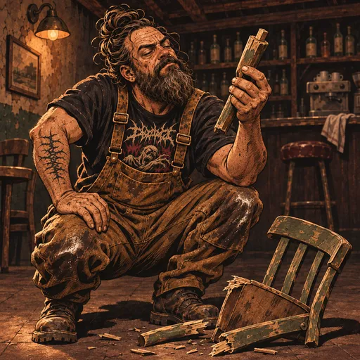
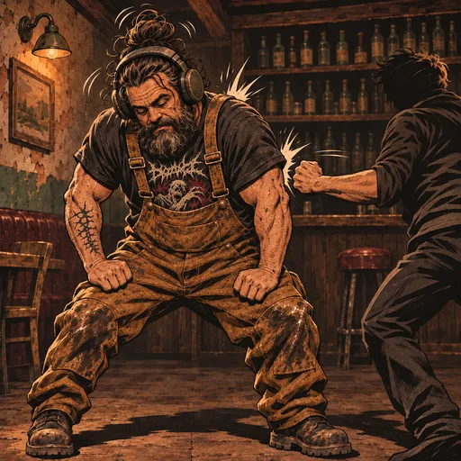
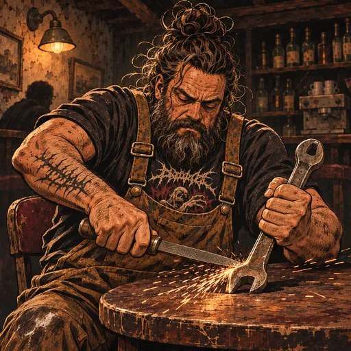
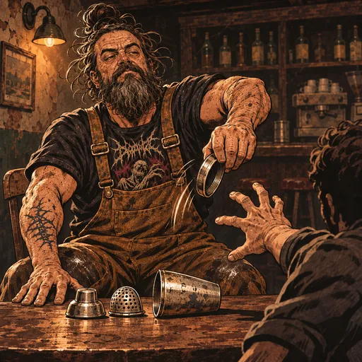
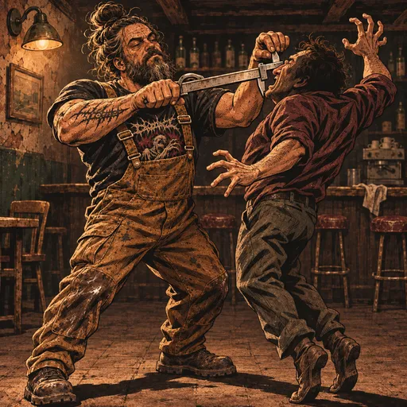
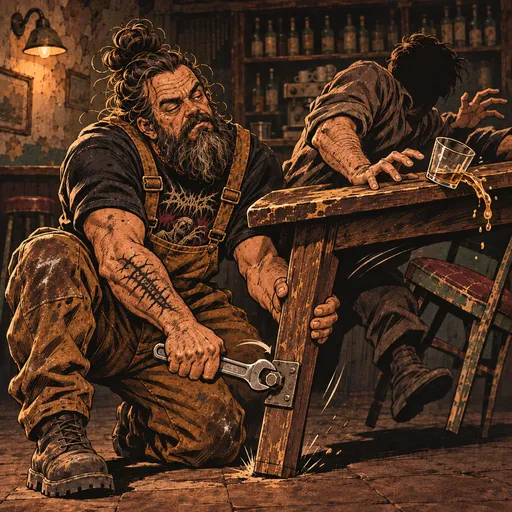

Questo Torna Utile
base.gigi.QuestoTornaUtile · Giudizio: in attesa.

A 60 px
Beppe e sedia rotta leggibili; pezzo di legno distinto. Braccia separate, dita e tasche troppo minute; nessun attrezzo in tasca distinguibile.
Dieci proposte in attesa del giudizio del proprietario. I campi non salvano automaticamente il testo. Registro.
base.gigi.QuestoTornaUtile · Giudizio: in attesa.

A 60 px
Beppe e sedia rotta leggibili; pezzo di legno distinto. Braccia separate, dita e tasche troppo minute; nessun attrezzo in tasca distinguibile.
base.gigi.bound.UnaStrettaEPassa · Versione 2 · Giudizio: in attesa.

A 60 px
Beppe e pugno inferiore leggibili; braccia separate, dita minute, tasche poco distinguibili; nessun attrezzo visibile. Il pugno superiore è rimosso; restano i segni bianchi d’impatto.

Remove the area marked in the second image from the first image
base.gigi.bound.ColpoDiCacciavite · Giudizio: in attesa.

A 60 px
Beppe e avversario distinguibili; cacciavite sottile, punta e dita minute; arti parzialmente coperti, tasche senza attrezzi distinguibili.
base.gigi.bound.Lima · Giudizio: in attesa.

A 60 px
Lima e chiave distinguibili come aste; estremità e impugnature minute, braccia separate; tasche non leggibili.
bruiser.BreakYourToy · Giudizio: in attesa.

A 60 px
Shaker e pezzi sul tavolo distinguibili; mano avversaria e braccia visibili, dita minute; tasche senza attrezzi distinguibili.
base.gigi.ChiaveDaTredici · Giudizio: in attesa.

A 60 px
Colpo e chiave leggibili; punta e mani minute, braccia sollevate separate; avversario parzialmente coperto, tasche senza attrezzi distinguibili.
base.gigi.ColpoDiChiaveInglese · Giudizio: in attesa.

A 60 px
Calibro e due figure leggibili; ganasce e dita minute, braccia distinguibili; tasche senza attrezzi visibili.
base.gigi.SottoIlCofano · Giudizio: in attesa.

A 60 px
Cofano e Beppe leggibili; asta nella mano visibile, forma e funzione minute; arti in parte coperti, tasche non verificabili.
base.gigi.LavoroFattoBene · Giudizio: in attesa.

A 60 px
Pugno e avversario leggibili; attrezzi sul tavolo minuti e forme non tutte distinguibili; arti separati, dita e tasche minute.
base.gigi.UnaStrettaDiProva · Giudizio: in attesa.

A 60 px
Tavolo inclinato e chiave visibili; estremità e dita minute, braccia distinguibili; tasche non verificabili.